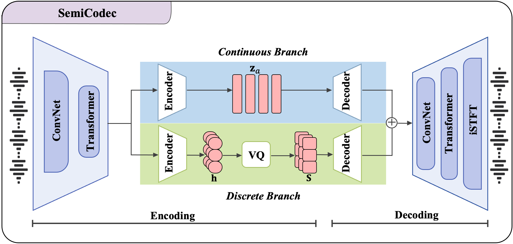
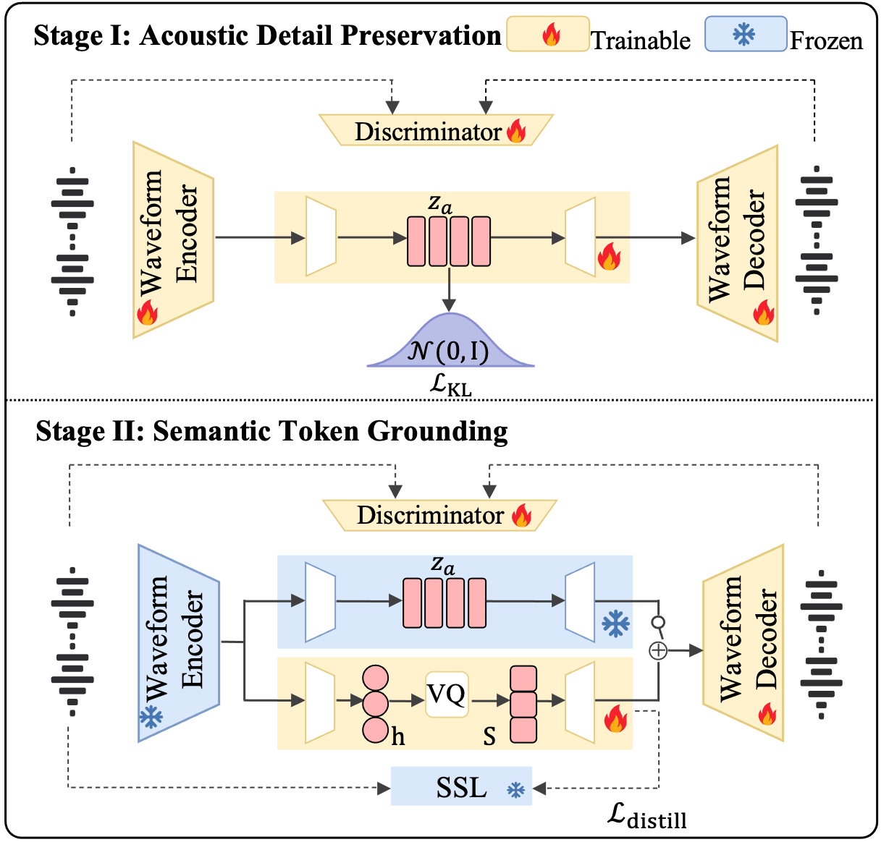

01
Discrete tokens
A 25-Hz discrete stream with a 4,096-entry codebook offers a compact, language-model-friendly representation.
ICASSP 2027 submission · Audio demo
Bridging Semantic Tokenization and High-Fidelity Reconstruction with Semi-Discrete Speech Representations
1Beijing University of Posts and Telecommunications · 2WeChat, Tencent Inc.
Unified speech generation models require representations that support language modeling while preserving high waveform fidelity. Existing approaches rarely achieve both: discrete tokens ease modeling but lose fine-grained acoustic information, while continuous latents preserve fidelity but require specialized generative objectives. We introduce SemiCodec, a novel Semi-discrete neural speech Codec with synchronized discrete tokens and continuous latents. Direct joint optimization may create a reconstruction shortcut through the continuous pathway, leaving the discrete tokens insufficiently grounded. To address this issue, we propose a “Preserve-then-Ground” training strategy that first establishes a high-fidelity synthesis space and then grounds semantic tokens within it. Experiments show that SemiCodec outperforms fully discrete codecs in reconstruction quality and intelligibility while remaining competitive with continuous representations in acoustic fidelity and speaker preservation.
Discrete semantic tokens provide a compact interface for language modeling, while continuous acoustic latents preserve speaker identity, prosody, and fine waveform detail.


A 25-Hz discrete stream with a 4,096-entry codebook offers a compact, language-model-friendly representation.
A synchronized 64-dimensional continuous stream retains information that is difficult to express through a single codebook.
The training schedule prevents the continuous path from becoming a reconstruction shortcut that leaves semantic tokens underused.
| Utterance | Reference Original |
SemiCodec Proposed |
Semantic-VAE Continuous |
Ming-omni-tts VAE Continuous |
dots.tts VAE Continuous |
WavTokenizer 40 Hz |
WavTokenizer 75 Hz |
X-Codec 2.0 | SAC |
|---|---|---|---|---|---|---|---|---|---|
|
ZH Sample 5
而收入也提升了三点零二倍，产能和收入的增速基本上是一致的。
|
|||||||||
|
ZH Sample 6
从过去到现在这种理论啊一直是各国制定经贸政策的重要依据。
|
|||||||||
|
ZH Sample 7
这样的孩子呢有一定的可能，就是在他还没有成熟的时候，别人给一点温暖就跑了。
|
|||||||||
|
ZH Sample 8
如果银行觉得政府补贴的不够，他就会决定直接进行止赎和拍卖。
|
|||||||||
|
EN Sample 1
The water of the rivulet was dark with endless drift and mirrored
the high drifting clouds.
|
|||||||||
|
EN Sample 2
Yet the deep marks of conical teeth upon the iron pick are certainly
those of the crocodile.
|
|||||||||
|
EN Sample 3
In this way the whole status of images as "copies" is
bound up with the analysis of memory.
|
|||||||||
|
EN Sample 4
These two cherubic infants had both big brown eyes, fat red cheeks,
and adorable, fluffy golden curls.
|